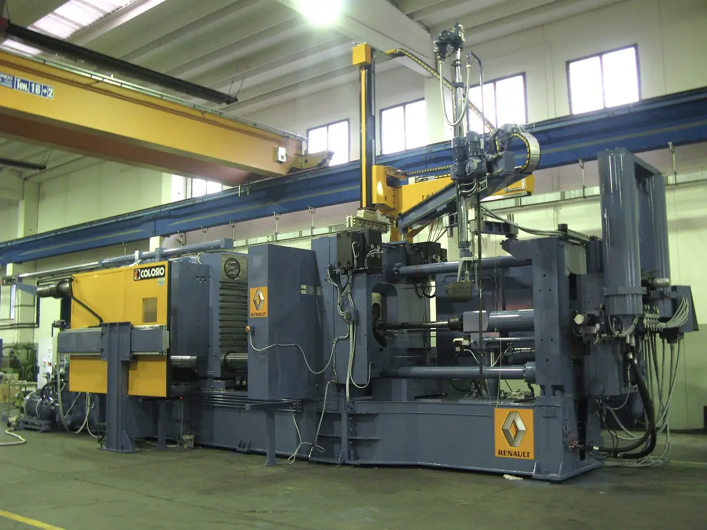
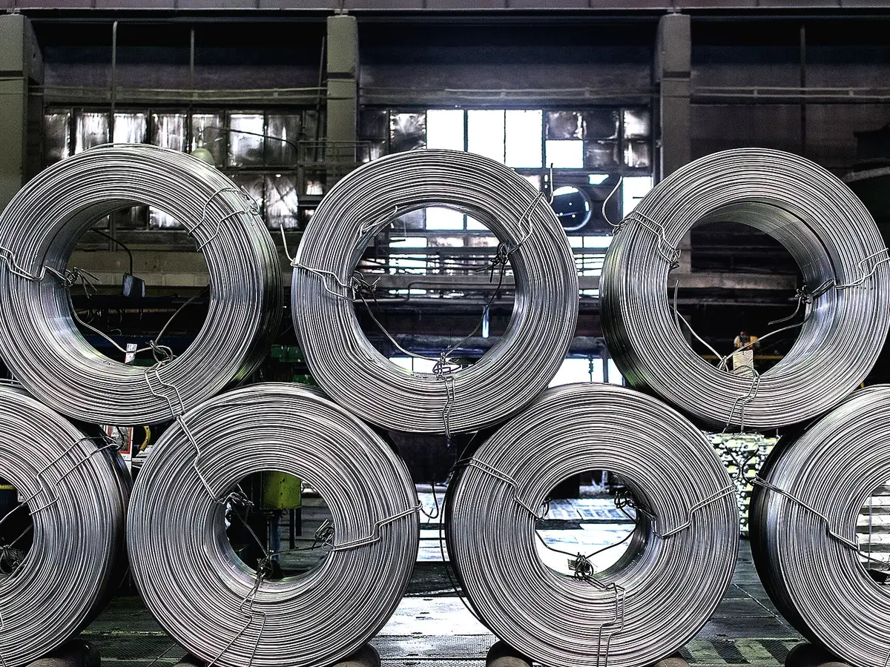
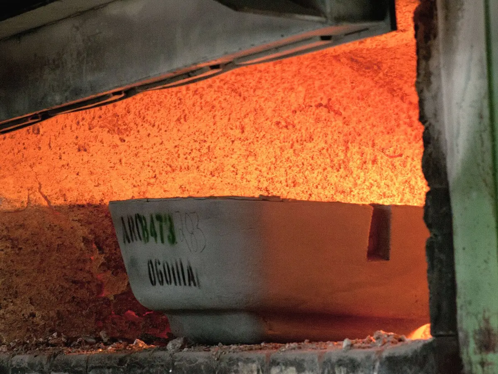
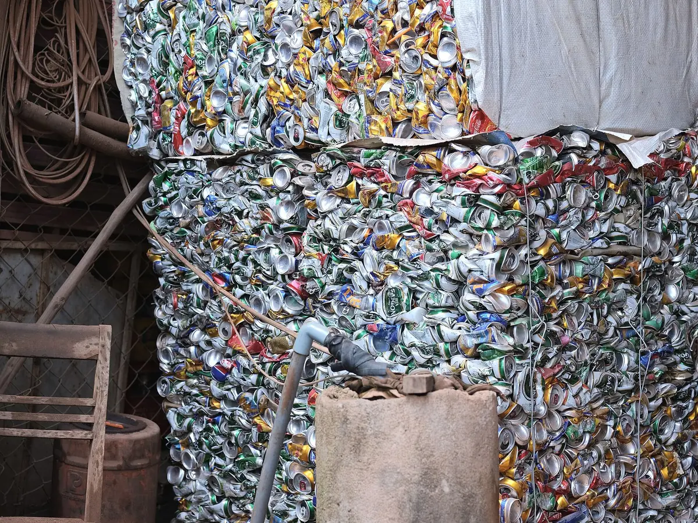

鋁錠堆疊｜產業示意照片，非新格實拍
PRODUCTS
產品中心
以鋁合金錠和鋁液，為壓鑄、澆鑄與軋製產業提供 100 多種規格產品；可生產日標、美標、歐標及中國國標牌號，或依客戶要求訂製成分。
01DIE CASTING ALLOYS
鑄造鋁合金錠
鋁合金比重僅 2.6–2.7，質輕且機械性質與耐蝕性優秀，廣泛應用於汽機車、產業機械、農漁機具、電氣通信、精密機器與日用品。亞洲地區普遍採用日本 JIS 規格，新格亦可依 DIN、BS、GB、ASTM 等標準生產。

- 供應形式
- 鋁合金錠、鋁液
- 主要應用
- 汽機車零件、家電、產業機械、通訊
- 授權產品
- K-Alloy™（經許可生產）
| 牌號 | Si | Fe | Cu | Mn | Mg | Ni | Zn | Sn |
|---|---|---|---|---|---|---|---|---|
| ADC 3 | 9.0–10.0 | ≤ 0.9 | ≤ 0.6 | ≤ 0.3 | 0.40–0.6 | ≤ 0.5 | ≤ 0.5 | ≤ 0.1 |
| ADC 6 | ≤ 1.0 | ≤ 0.6 | ≤ 0.1 | 0.4–0.6 | 2.6–4.0 | ≤ 0.1 | ≤ 0.4 | ≤ 0.1 |
| ADC 10 | 7.5–9.5 | ≤ 0.9 | 2.0–4.0 | ≤ 0.5 | ≤ 0.3 | ≤ 0.5 | ≤ 1.0 | ≤ 0.2 |
| ADC 12 | 9.6–12.0 | ≤ 0.9 | 1.5–3.5 | ≤ 0.5 | ≤ 0.3 | ≤ 0.5 | ≤ 1.0 | ≤ 0.2 |
| ADC 14 | 16.0–18.0 | ≤ 0.9 | 4.0–5.0 | ≤ 0.5 | 0.50–0.65 | ≤ 0.3 | ≤ 1.5 | ≤ 0.3 |
比較兩種牌號
表列為主要元素上限或範圍，其餘為鋁（Al）。實際規格、公差與檢驗項目以雙方確認之技術協議為準。
02PRECISION CASTING
A356.2 合金
由重慶綦江基地專業化生產，兼具輕量化、高強度、易鑄造與耐腐蝕等優勢，為汽車、航空、機械與電子領域提供主流關鍵材料。
- 生產基地
- 重慶綦江
- 特性
- 輕量、高強度、易鑄造、耐腐蝕
- 應用
- 汽車輪轂與結構件、航空、機械、電子
03WROUGHT ALLOYS & SLABS
變形鋁合金與高端扁錠
以重熔錠與鋁液供應變形鋁合金。2025 年 11 月重慶新格扁錠項目投產，生產高端鋁板帶材的核心原料。

- 3104
易開罐系列。重慶、鞏義、濱州、日照基地專業生產，保級還原，成分、性能與純淨度全面達到食品級標準，實現高價值閉環循環。用於啤酒、飲料罐罐身。
- 5182
罐蓋、拉環與汽車板用合金扁錠。
- 6063
變形鋁合金重熔錠與鋁液。
- 3033
變形鋁合金重熔錠與鋁液。
04MOLTEN ALUMINUM
鋁液直供
新格首創「鋁液直供－壓鑄成型」短流程體系：熔煉完成的鋁液以保溫鋁湯包直接配送至客戶壓鑄現場，客戶無需再將合金錠重新熔化，節省能源、時間與熔損。

- 熔煉精煉
- 調質爐
- 保溫爐
- 鋁湯包
- 配送至壓鑄現場
- 供應半徑
- 約 200 公里鋁液供應圈
- 占產能比重
- 約 60% 產能以鋁液直供
- 合作案例
- 現代集團日照威亞發動機廠、一汽集團長春總廠等配套工廠
鋁液直供需依廠區距離、合金牌號、月用量與交付節拍個別評估，歡迎與業務團隊討論。
05ZINC ALLOYS
鋅合金錠
以純鋅錠為原料，於 5 噸鋅熔解爐生產線生產，在嚴格品質檢測下製成符合國際標準的鋅合金錠，並可依客戶特殊需求訂製。
| 牌號 | Al | Cu | Mg | Fe | Pb | Cd | Sn |
|---|---|---|---|---|---|---|---|
| Zamak-3 | 3.5–4.3 | ≤ 0.25 | 0.02–0.06 | ≤ 0.1 | ≤ 0.005 | ≤ 0.004 | ≤ 0.003 |
| Zamak-5 | 3.5–4.3 | 0.75–1.25 | 0.03–0.08 | ≤ 0.1 | ≤ 0.007 | ≤ 0.005 | ≤ 0.005 |
| ZSG-3 | 3.5–4.3 | ≤ 0.5 | 0.02–0.06 | ≤ 0.1 | ≤ 0.015 | ≤ 0.004 | ≤ 0.003 |
表列為主要元素上限或範圍，其餘為鋅（Zn）。
06COPPER ALLOYS
銅合金
生產銅合金 YSBC3，適用於各類閥門及燃氣具。
- 牌號
- YSBC3
- 含銅量
- 58–60% 及 60–62% 兩種
- 應用
- 閥門、燃氣具
07SCRAP SOURCING
原料採購
新格是臺灣第一家同時成為美國 ISRI 與歐洲 BIR 會員的廢金屬貿易商，每年自世界各地採購超過 30 萬噸各式廢料，除供應自有熔煉廠，也經營廢料貿易。歡迎全球廢料供應商與我們聯繫。

鋁廢料
銅廢料與重金屬
純金屬
| 項目 | 553 金屬矽 | 441 金屬矽 |
|---|---|---|
| 成分要求 | Si ≥ 98.5%；Fe ≤ 0.5%；Al ≤ 0.5%；Ca ≤ 0.3% | Si ≥ 98.5%；Fe ≤ 0.4%；Al ≤ 0.4%；Ca ≤ 0.1% |
| 粒度要求 | 10–100 mm ≥ 90% | 10–100 mm ≥ 90% |
| 包裝要求 | 1 噸塑膠編織袋 | 1 噸塑膠編織袋 |
找不到需要的牌號？
新格可生產日標、美標、歐標及中國國標牌號，或依您的成分要求訂製。